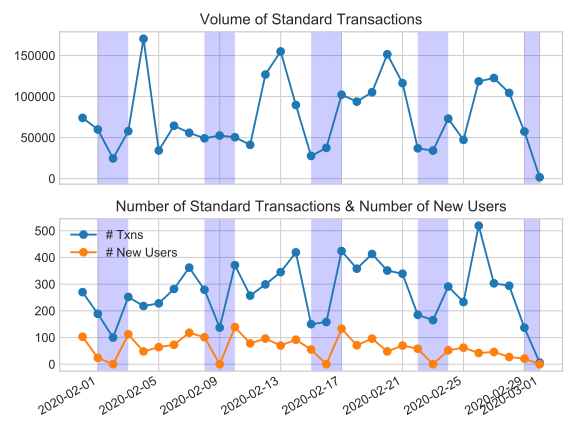

CIC Pilot Impacts and Plans

In the last 30 days we have had 3015 users making at least 1 trade. For a volume of 2,336,655 Tokens (~23k USD equivalent of goods and services traded) … those 3015 users are holding 1,514,155 Tokens (~15k USD). That would be a monthly velocity of ~1.54 (CIC Supply/Trade) (that is 3x higher! than current M2 USD velocity https://fred.stlouisfed.org/series/M2V reported quarterly)
Note that currently no one can cash out their reserve yet (still building the software) – instead Grassroots Economics (GE) is buying tokens off the Groups accounts (groups of about 25 women who all run businesses and save together). In that same period we have bought 387,715 Tokens (~3.8k USD)
- Currently → Trade / Cash-out-Cost = (~23k usd) / (~3.8k USD) is about 6x impact (as measured by increased purchasing power compared to Kenyan shillings).
Again note that currently users can’t create their own CICs by adding reserve to their particular group’s CIC reserve nor can they cash out that reserve. In the next stage we are no longer buying off CICs (but rather users can cash out from their own reserves) and anyone (like a GE as a donor) can also add more reserve to mint CICs. We can then talk both amounts cashed out and cashed in (from/to reserves).
So in the (we hope very near) future there is an initial seed fund of USD (DAI) going into reserve (which creates ~4x (leverage to) the number of CIC tokens to reserve based on risk/ size of reserve) – then cashing out from that (burning CICs) and adding back to it (minting CICs). See equations here: https://www.grassrootseconomics.org/single-post/Enabling-Leverage
- Near Target → Trade / Cost = (~23k usd) / (~1.1k USD Cashed our minus cashed in) is about 20x impact.
For a fully resilient CIC the Cashing-out and Cashing-in are equal over a time period (given adequate market size) – hence the cashing-out ‘cost’ here goes to zero. Leaving the cost to support the initial seed fund as well as maintain customer support/systems (Fixed costs of staff and services).
- Future Target → Continuous Trade / (Once time cost + minimal support cost) = +100x
- Preliminary studies (https://www.grassrootseconomics.org/single-post/eMoney-vs-CIC) using eMoney suggest that if you compare 15k USD worth of CICs entering the network of ~3000 traders vs 15k USD worth of eMoney (MPESA) injected you get comparable trade volume (23k USD). The distinction is that with eMoney over 90% of it ends up outside the network in the same time period while with CICs it stays in local circulation – only 25% (3.8k/15k) was turned into Mpesa (through GE purchases) and quickly leaves the community. Also important to note there that the 15k of CIC tokens were created with only 3.7k USD of collateral / reserve.
Hence, currently we are able to get the same volume of trade as Mpesa with roughly 50% of the cost (3.7+3.8=7.6k USD) of injecting Mpesa directly, while also assuring that the trade will be at least 75% in the network. More effort to track cash and eMoney in these networks is needed to properly compare. This would double the trade volume / impact, based on the same donations given out of organizations like Give Directly that do cash transfer (and ideally much more than double in future iterations with more direct access to reserve).
Finally note that our method of initial distribution of CICs, in lieu ofand eventually in addition to not yet being able to allow people to create their own, is to give each new user 400 (~$4USD roughly the cost of feeding a family of 5 for one day. Other distribution methods being developed include redistributing a collective tax chosen by a community, using a users connectivity to the network in different trade categories (I.e.. supporting social services with democratic participatory budgeting).
Trade data can now be found here: http://grassecon.org/research Please bear with us. We are working on a new dashboard and faster live updates!